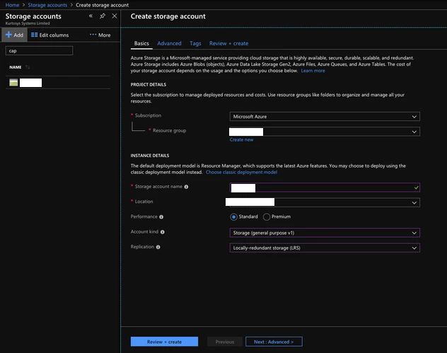

Azure
SFTP Server using Storage Account
Create Storage Account
Deploy template https://docs.microsoft.com/en-us/samples/azure-samples/sftp-creation-template/sftp-on-azure/
Sentinal
Az-CLI
Creating Tunnels
## Create a Gatway Subnet for VNET
az network vnet subnet create -g "$RSG" --vnet-name "$VNET" -n "GatewaySubnet" --address-prefix "10.$SUBNUM.207.224/27"
## Create a Public IP Address for VGW (https://docs.microsoft.com/en-us/azure/vpn-gateway/vpn-gateway-vpn-faq#can-i-request-a-static-public-ip-address-for-my-vpn-gateway)
az network public-ip create -g "$RSG" -n "$VGW_PIP" --allocation-method "dynamic"
## Create a VNET Gateway
az network vnet-gateway create -g "$RSG" -n "$VGW_NAME" --vnet "$VNET" --public-ip-addresses "$VGW_PIP" --sku "Standard"
## Create a local-gateway (VPN Peer) to connect to
az network local-gateway create -g "$RSG" -n "$LGW1" --gateway-ip-address "$PIP1" --local-address-prefixes "$SUBNET"
## Create the tunnel on Azure's side
az network vpn-connection create -g "$RSG" -n "$CON1" --vnet-gateway1 "$VGW_NAME" --local-gateway2 "$LGW1" --shared-key "$PSK"
## VNET to VNET Tunnels
for XX in $OTHER_REGIONS; do
VGW_ID=$(az network vnet-gateway show -g "$XX-RSG" -n "$XX-VPN-GW" | grep id | head -n1 | awk -F '"' '{print $4}')
az network vpn-connection create -g "$RSG" -n "$VNET-$XX-VNET" --vnet-gateway1 "$VGW_NAME" --vnet-gateway2 "$VGW_ID" --shared-key "$VNET_PSK"
done
Tunnel Config on ASA
ASA_PEER=$(az network public-ip show -g "$RSG" -n "$VGW_PIP" --query ipAddress -o tsv)
ASA_PEER_NAME="CORP-AZURE-$REGION_PREFIX-$SUBNUM"
ASA_REMOTE_SUBNET=$(echo "$VNET_PREFIX" | grep -o '[0-9]\{1,3\}\.[0-9]\{1,3\}\.[0-9]\{1,3\}\.[0-9]\{1,3\}')
# Generate Azure tunnel configuration
FILENAME="$REGION_PREFIX.ps1"
echo "# This file is generated by scriptPX" >> "$FILENAME"
echo "\$POLICY = New-AzIpsecPolicy -IkeEncryption AES$P1_AES -IkeIntegrity SHA$P1_SHA -DhGroup DHGroup$DH_GROUP -IpsecEncryption GCMAES$P2_GCM_AES -IpsecIntegrity GCMAES$P2_GCM_AES -PfsGroup PFS$DH_GROUP -SALifeTimeSeconds 14400 -SADataSizeKilobytes 102400000" > "$FILENAME"
echo "\$RSG = \"$RSG\"" >> "$FILENAME"
echo "\$Connections = @(\"$CON1\", \"$CON2\")" >> "$FILENAME"
echo "foreach (\$Connection in \$Connections) {" >> "$FILENAME"
echo " \$CON = Get-AzVirtualNetworkGatewayConnection -name \$Connection -ResourceGroupName \$RSG" >> "$FILENAME"
echo " Set-AzVirtualNetworkGatewayConnection -VirtualNetworkGatewayConnection \$CON -IpsecPolicies \$POLICY -UsePolicyBasedTrafficSelectors \$True -Force" >> "$FILENAME"
echo "}" >> "$FILENAME"
# Generate ASA tunnel configuration
for i in "${OFFICES[@]}"; do
OFFICE=$i
if [[ "$OFFICE" == "CPT" ]] ; then
FILENAME="03-4-tunnels-cpt-az$REGION_PREFIX"
PSK="$CPT_PSK"
ASA_LOCAL_SUBNET=$(echo "$CPT_SUBNET" | grep -o '[0-9]\{1,3\}\.[0-9]\{1,3\}\.[0-9]\{1,3\}\.[0-9]\{1,3\}')
NEXT_HOP_INT="$CPT_NEXT_HOP_INT"
NEXT_HOP_IP="$CPT_NEXT_HOP_IP"
elif [[ "$OFFICE" == "JHB" ]]; then
FILENAME="03-5-tunnels-jhb$REGION_PREFIX"
PSK="$JHB_PSK"
ASA_LOCAL_SUBNET=$(echo "$JHB_SUBNET" | grep -o '[0-9]\{1,3\}\.[0-9]\{1,3\}\.[0-9]\{1,3\}\.[0-9]\{1,3\}')
NEXT_HOP_INT="$JHB_NEXT_HOP_INT"
NEXT_HOP_IP="$JHB_NEXT_HOP_IP"
elif [[ "$OFFICE" == "DBN" ]]; then
FILENAME="03-6-tunnels-dbn$REGION_PREFIX"
PSK="$DBN_PSK"
ASA_LOCAL_SUBNET=$(echo "$DBN_SUBNET" | grep -o '[0-9]\{1,3\}\.[0-9]\{1,3\}\.[0-9]\{1,3\}\.[0-9]\{1,3\}')
NEXT_HOP_INT="$DBN_NEXT_HOP_INT"
NEXT_HOP_IP="$DBN_NEXT_HOP_IP"
fi
echo "# This file is generated by scriptPX" >> "$FILENAME"
echo "wr mem" >> "$FILENAME"
echo "copy /noconfirm startup startup$rdate" > "$FILENAME"
echo "name $ASA_PEER $ASA_PEER_NAME" > "$FILENAME"
echo "" >> "$FILENAME"
echo "group-policy GroupPolicy_$ASA_PEER internal" >> "$FILENAME"
echo "group-policy GroupPolicy_$ASA_PEER attributes" >> "$FILENAME"
echo " vpn-tunnel-protocol ikev2" >> "$FILENAME"
echo "" >> "$FILENAME"
echo "tunnel-group $ASA_PEER type ipsec-l2l" >> "$FILENAME"
echo "tunnel-group $ASA_PEER general-attributes" >> "$FILENAME"
echo " default-group-policy GroupPolicy_$ASA_PEER" >> "$FILENAME"
echo "tunnel-group $ASA_PEER ipsec-attributes" >> "$FILENAME"
echo " ikev2 local-authentication pre-shared-key $PSK" >> "$FILENAME"
echo " ikev2 remote-authentication pre-shared-key $PSK" >> "$FILENAME"
echo "" >> "$FILENAME"
echo "object-group network VPN-LOCAL-$SUBNUM" >> "$FILENAME"
echo " description OnPrem Network" >> "$FILENAME"
echo " network-object $ASA_LOCAL_SUBNET 255.255.0.0" >> "$FILENAME"
echo "" >> "$FILENAME"
echo "object-group network VPN-REMOTE-$SUBNUM" >> "$FILENAME"
echo " description Azure Virtual Network" >> "$FILENAME"
echo " network-object $ASA_REMOTE_SUBNET 255.255.0.0" >> "$FILENAME"
echo "" >> "$FILENAME"
echo "access-list $SUBNUM extended permit ip object-group VPN-LOCAL-$SUBNUM object-group VPN-REMOTE-$SUBNUM" >> "$FILENAME"
echo "" >> "$FILENAME"
echo "crypto ikev2 policy $SUBNUM" >> "$FILENAME"
echo " encryption aes-$P1_AES" >> "$FILENAME"
echo " integrity sha$P1_SHA" >> "$FILENAME"
echo " group $DH_GROUP" >> "$FILENAME"
echo " prf $PRF" >> "$FILENAME"
echo " lifetime seconds $P1_LIFETIME" >> "$FILENAME"
echo "" >> "$FILENAME"
echo "crypto ipsec ikev2 ipsec-proposal AES-GCM-$P2_GCM_AES" >> "$FILENAME"
echo " protocol esp encryption aes-gcm-$P2_GCM_AES" >> "$FILENAME"
echo " protocol esp integrity aes-gcm-$P2_GCM_AES" >> "$FILENAME"
echo "" >> "$FILENAME"
echo "crypto map outside_map $SUBNUM match address $SUBNUM" >> "$FILENAME"
echo "crypto map outside_map $SUBNUM set pfs group$DH_GROUP" >> "$FILENAME"
echo "crypto map outside_map $SUBNUM set peer $ASA_PEER_NAME" >> "$FILENAME"
echo "crypto map outside_map $SUBNUM set ikev2 ipsec-proposal AES-GCM-$P2_GCM_AES" >> "$FILENAME"
echo "crypto map outside2_map $SUBNUM match address $SUBNUM" >> "$FILENAME"
echo "crypto map outside2_map $SUBNUM set pfs group$DH_GROUP" >> "$FILENAME"
echo "crypto map outside2_map $SUBNUM set peer $ASA_PEER_NAME" >> "$FILENAME"
echo "crypto map outside2_map $SUBNUM set ikev2 ipsec-proposal AES-GCM-$P2_GCM_AES" >> "$FILENAME"
echo "" >> "$FILENAME"
echo "nat (any,outside) source static VPN-LOCAL-$SUBNUM VPN-LOCAL-$SUBNUM destination static VPN-REMOTE-$SUBNUM VPN-REMOTE-$SUBNUM no-proxy-arp route-lookup" >> "$FILENAME"
echo "nat (any,outside2) source static VPN-LOCAL-$SUBNUM VPN-LOCAL-$SUBNUM destination static VPN-REMOTE-$SUBNUM VPN-REMOTE-$SUBNUM no-proxy-arp route-lookup" >> "$FILENAME"
echo "" >> "$FILENAME"
echo "access-list Outside-Split-ACL standard permit $ASA_REMOTE_SUBNET 255.255.0.0" >> "$FILENAME"
echo "" >> "$FILENAME"
if [[ "$NEXT_HOP_INT" == "outside" ]]; then
echo "# using default route" >> "$FILENAME"
else
echo "route $NEXT_HOP_INT $ASA_PEER_NAME 255.255.255.255 $NEXT_HOP_IP 1" >> "$FILENAME"
fi
echo "wr mem" >> "$FILENAME"
done
Public IP
<code>AZ_PEER_PIP1=$(az network public-ip show -g "$RSG" -n "$VGW_PIP" --query ipAddress -o tsv)
Functions
# Nothing needs to be defined to use function (no, you don't have to define Nothing= :))
network-lb-create() {
az network lb create --resource-group "$RSG" --name "$LB_NAME" --frontend-ip-name "$LB_FE_POOL_NAME" \
--private-ip-address "$LB_IP" --backend-pool-name "$LB_BE_POOL_NAME" --vnet-name "$VNET" --subnet "$SUBNET"
}
# LB_PROBE_PROTO and LB_PROBE_PORT need to be defined to use function
network-lb-probe-create() {
az network lb probe create --resource-group "$RSG" --lb-name "$LB_NAME" \
--name "$LB_PROBE_NAME" --protocol "$LB_PROBE_PROTO" --port "$LB_PROBE_PORT"
}
# LB_RULE_NAME, LB_RULE_PORT, and LB_RULE_PROTO need to be defined to use function
lb-rule-create() {
az network lb rule create --resource-group "$RSG" --lb-name "$LB_NAME" \
--name "$LB_NAME-$LB_RULE_NAME" --protocol "$LB_RULE_PROTO" --frontend-port "$LB_RULE_PORT" \
--backend-port "$LB_RULE_PORT" --frontend-ip-name "$LB_FE_POOL_NAME" \
--backend-pool-name "$LB_BE_POOL_NAME" --probe-name "$LB_PROBE_NAME"
}
# NSGR_NAME, NSGR_SRC, NSGR_DST, NSGR_PORTS, NSGR_PROTO, and NSGR_PRIORITY need to be defined to use function
nsg-rule-create() {
az network nsg rule create -g "$RSG" --nsg-name "$NSG" -n $NSGR_NAME \
--source-address-prefixes ""$NSGR_SRC"" \
--destination-address-prefixes "$NSGR_DST" \
--destination-port-ranges "$NSGR_PORTS" --priority "$NSGR_PRIORITY" \
--access Allow --protocol "$NSGR_PROTO" --direction Inbound
}
# VM_NIC_NAME needs to be defined to use function
network-nic-create() {
az network nic create \
-g "$RSG" -n "$VM_NIC_NAME" \
--vnet-name "$VNET" \
--subnet "$SUBNET" "$@"
}
network-nic-list() {
az network nic list \
-g "$RSG" \
--vnet-name "$VNET"
}
# AS_NAME needs to be defined to use function
vm-availability-set-create() {
az vm availability-set create -g "$RSG" -n "$AS_NAME"
}
# VM_NIC_NAME needs to be defined to use function
network-nic-pool-add() {
az network nic ip-config address-pool add -g "$RSG" --nic-name "$VM_NIC_NAME" \
--ip-config-name "ipconfig1" --address-pool "$LB_BE_POOL_NAME" --lb-name "$LB_NAME"
}
# VM_NAME and VM_NIC_NAME need to be defined to use function
vm-create() {
az vm create \
-g "$RSG" -n "$VM_NAME" \
--image "$VM_IMAGE" \
--admin-username "$VM_USER" \
--admin-password "$VM_PASS" \
--size "$VM_FLAVOUR" \
--storage-sku "$VM_DISK_TYPE" \
--nics "$VM_NIC_NAME" \
--generate-ssh-keys "$@"
}
# VM_NAME needs to be defined to use function
vm-ip-private() {
az vm show -d -g "$RSG" -n "$VM_NAME" --query privateIps -o tsv
}
# VM_NAME needs to be defined to use function
vm-ip-public() {
az vm show -d -g "$RSG" -n "$VM_NAME" --query publicIps -o tsv
}
# VM_IP needs to be defined to use function
vm-copy-ssh-key() {
.ssh/login.expect "$VM_PASS" "$VM_USER" "$VM_IP"
}
Resize Disk
https://docs.microsoft.com/en-us/azure/virtual-machines/linux/expand-disks
# Get a list of disks in RSG
az disk list -g RSG --query '[*].{Name:name,Gb:diskSizeGb,Tier:accountType}' --output table
# Output the name of the disk
az disk list -g RSG --query '[*].{Name:name,Gb:diskSizeGb,Tier:accountType}' --output table | grep SERVERNAME | awk '{print $1}'
# Stop the VM
az vm stop -g RSG -n SERVERNAME
# Deallocate the VM
az vm deallocate -g RSG -n SERVERNAME
# Resize the disk
az disk update -g UK-RSG -n SERVERNAME_OsDisk_1_xxxxxxxxxx --size-gb 100
# Start the VM
az vm start -g RSG -n SERVERNAME
Azure Powershell
Modifying IPSec Policies
# Maximum strength:
$POLICY = New-AzIpsecPolicy -IkeEncryption AES256 -IkeIntegrity SHA384 -DhGroup DHGroup24 -IpsecEncryption GCMAES256 -IpsecIntegrity GCMAES256 -PfsGroup PFS24 -SALifeTimeSeconds 14400 -SADataSizeKilobytes 102400000
$RSG = "RSG"
$Connections = @("CON1", "CON2")
foreach ($Connection in $Connections) {
$CON = Get-AzVirtualNetworkGatewayConnection -name $Connection -ResourceGroupName $RSG
Set-AzVirtualNetworkGatewayConnection -VirtualNetworkGatewayConnection $CON -IpsecPolicies $POLICY -UsePolicyBasedTrafficSelectors $True -Force
}
Deploy AADDS
# Change the following values to match your deployment.
$AaddsAdminUserUpn = "admin@contoso.onmicrosoft.com"
$ResourceGroupName = "myResourceGroup"
$VnetName = "myVnet"
$AzureLocation = "westus"
$AzureSubscriptionId = "xxxxxx-xxxxx-xxxx-xxxx-xxxxxxx"
$ManagedDomainName = "mydomain.com"
# Connect to your Azure AD directory.
Connect-AzureAD
# Login to your Azure subscription.
Connect-AzAccount
# Create the service principal for Azure AD Domain Services.
New-AzureADServicePrincipal -AppId "2565bd9d-da50-47d4-8b85-4c97f669dc36"
# Create the delegated administration group for AAD Domain Services.
New-AzureADGroup -DisplayName "AAD DC Administrators" `
-Description "Delegated group to administer Azure AD Domain Services" `
-SecurityEnabled $true -MailEnabled $false `
-MailNickName "AADDCAdministrators"
# First, retrieve the object ID of the newly created 'AAD DC Administrators' group.
$GroupObjectId = Get-AzureADGroup `
-Filter "DisplayName eq 'AAD DC Administrators'" | `
Select-Object ObjectId
# Now, retrieve the object ID of the user you'd like to add to the group.
$UserObjectId = Get-AzureADUser `
-Filter "UserPrincipalName eq '$AaddsAdminUserUpn'" | `
Select-Object ObjectId
# Add the user to the 'AAD DC Administrators' group.
Add-AzureADGroupMember -ObjectId $GroupObjectId.ObjectId -RefObjectId $UserObjectId.ObjectId
# Register the resource provider for Azure AD Domain Services with Resource Manager.
Register-AzResourceProvider -ProviderNamespace Microsoft.AAD
# Create the resource group.
New-AzResourceGroup `
-Name $ResourceGroupName `
-Location $AzureLocation
# Create the dedicated subnet for AAD Domain Services.
$AaddsSubnet = New-AzVirtualNetworkSubnetConfig `
-Name DomainServices `
-AddressPrefix 10.0.0.0/24
$WorkloadSubnet = New-AzVirtualNetworkSubnetConfig `
-Name Workloads `
-AddressPrefix 10.0.1.0/24
# Create the virtual network in which you will enable Azure AD Domain Services.
$Vnet=New-AzVirtualNetwork `
-ResourceGroupName $ResourceGroupName `
-Location $AzureLocation `
-Name $VnetName `
-AddressPrefix 10.0.0.0/16 `
-Subnet $AaddsSubnet,$WorkloadSubnet
# Enable Azure AD Domain Services for the directory.
New-AzResource -ResourceId "/subscriptions/$AzureSubscriptionId/resourceGroups/$ResourceGroupName/providers/Microsoft.AAD/DomainServices/$ManagedDomainName" `
-Location $AzureLocation `
-Properties @{"DomainName"=$ManagedDomainName; `
"SubnetId"="/subscriptions/$AzureSubscriptionId/resourceGroups/$ResourceGroupName/providers/Microsoft.Network/virtualNetworks/$VnetName/subnets/DomainServices"} `
-Force -Verbose
Connection Troubleshooting
GUI
https://docs.microsoft.com/en-us/azure/network-watcher/network-watcher-packet-capture-manage-portal
Create a Storage Account

Go to Home > Network Watcher - Packet capture > Add
Select the following from the dropdowns:
Resource group: (your RSG)
Target Virtual Machine: (the VM that you want to run the capture on)
Packet capture name: (give it something unique)
Storage account: (your storage account )
Maximum bytes per session: 10485760 (10MB, instead of the default 1GB)
CLI
https://docs.microsoft.com/en-us/cli/azure/network/watcher/packet-capture?view=azure-cli-latest
az network watcher packet-capture create -g MyResourceGroup -n MyPacketCaptureName --vm MyVm \
--storage-account MyStorageAccount --filters '[ \
{ \
"protocol":"TCP", \
"remoteIPAddress":"1.1.1.1-255.255.255", \
"localIPAddress":"10.0.0.3", \
"remotePort":"20" \
}, \
{ \
"protocol":"TCP", \
"remoteIPAddress":"1.1.1.1-255.255.255", \
"localIPAddress":"10.0.0.3", \
"remotePort":"80" \
}, \
{ \
"protocol":"TCP", \
"remoteIPAddress":"1.1.1.1-255.255.255", \
"localIPAddress":"10.0.0.3", \
"remotePort":"443" \
}, \
{ \
"protocol":"UDP" \
}]'